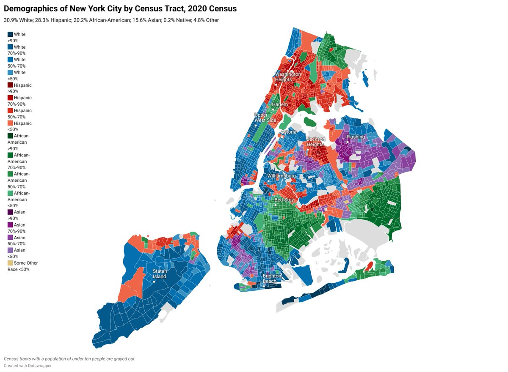
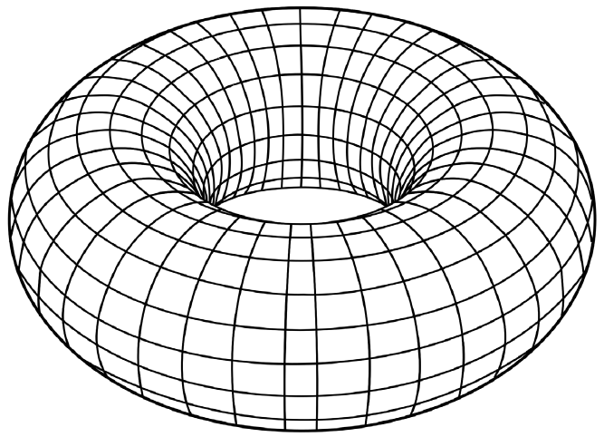
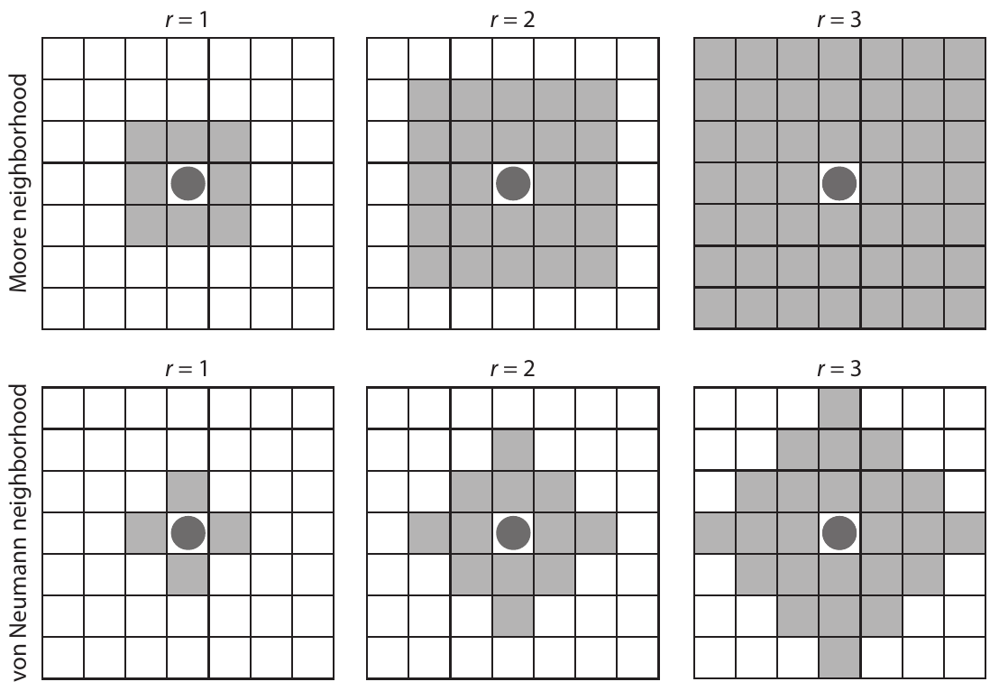
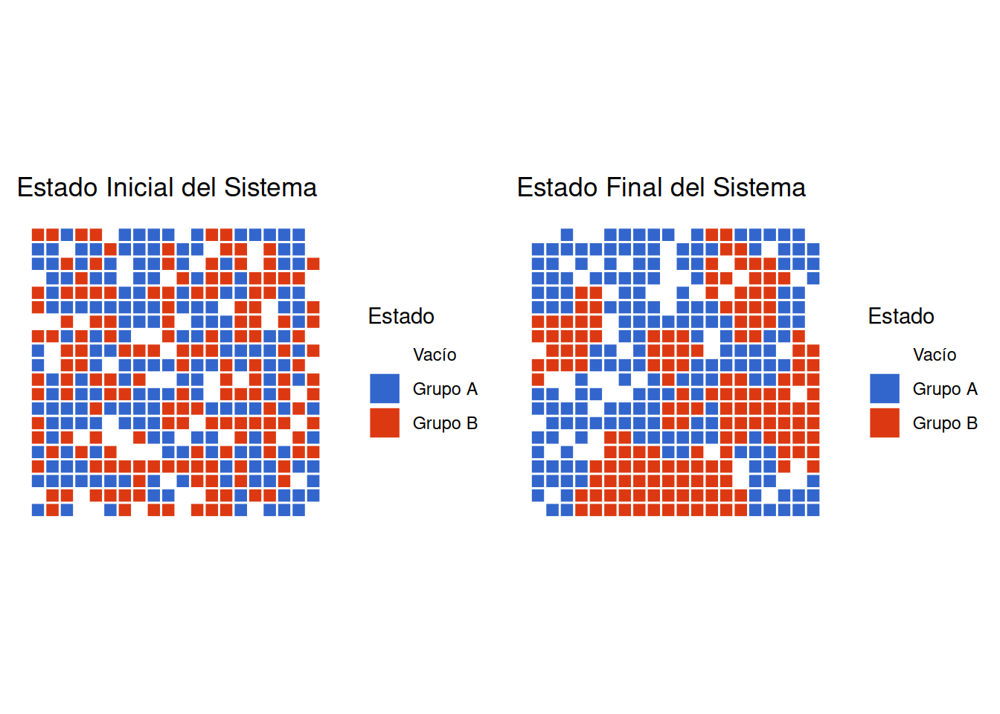
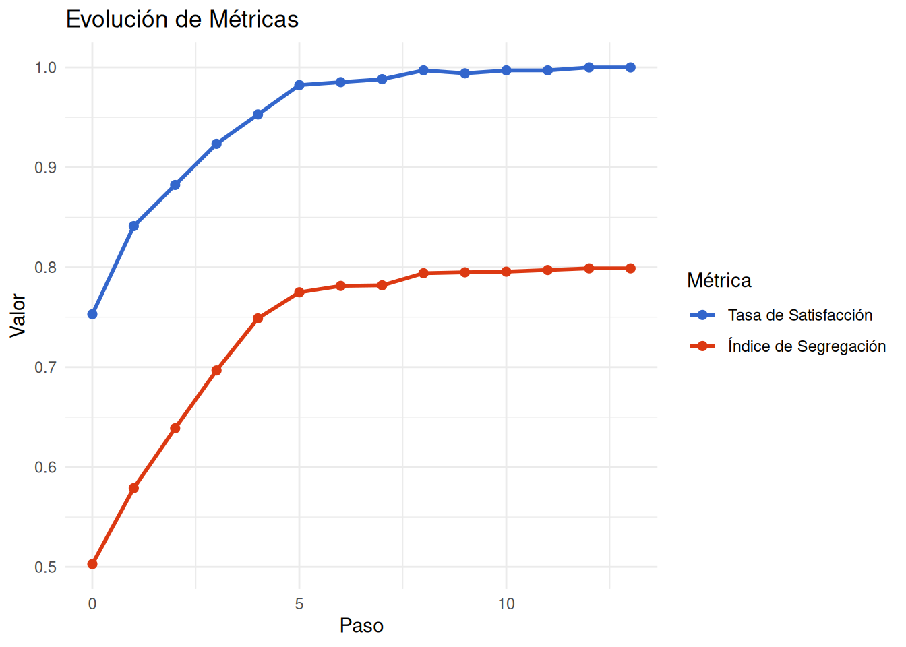
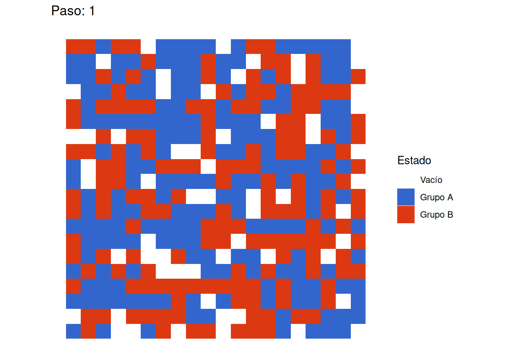
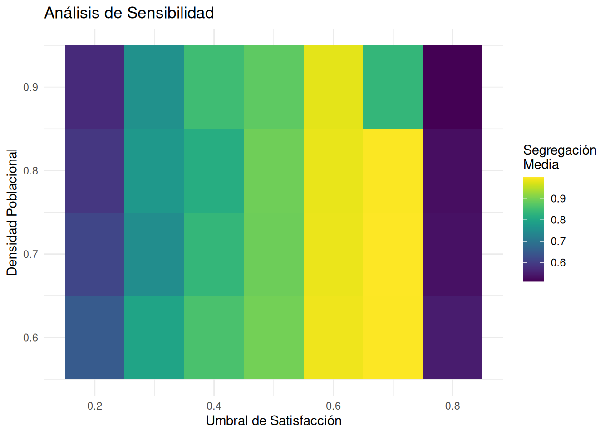

setup:
`limpiar_todo`
`crear_agentes`
`actualizar_agentes`
`actualizar_globales`Introducción: El Fenómeno de la Segregación Urbana
Las ciudades, los barrios y los países suelen estar segregados. Esto significa que las personas de diferentes razas o etnias tienden a estar agrupadas geoespacialmente. Este fenómeno, observable en prácticamente todas las sociedades multiculturales, plantea importantes preguntas sobre sus causas y mecanismos subyacentes.
Por ejemplo, el siguiente mapa muestra los patrones de segregación para la ciudad de NY en el año 2020, donde se pueden observar claramente patrones de agrupamiento espacial por características étnicas:

Marco Teórico: El Modelo de Schelling
Mecanismos de Segregación
Thomas Schelling (1971) identificó tres mecanismos fundamentales que pueden generar segregación:
- Acción Organizada: Prácticas institucionales discriminatorias, tanto legales como informales
- Filtros Socioeconómicos: Correlaciones entre etnia y recursos que generan barreras estructurales
- Preferencias Individuales: Decisiones basadas en la composición del vecindario
Enfoque del Modelo
Aunque Schelling consideraba que los dos primeros mecanismos probablemente eran más importantes, decidió estudiar el tercero para entender cómo incluso preferencias individuales moderadas podrían generar segregación significativa.
Descomposición del Sistema
Antes de construir el modelo, necesitamos descomponer el sistema complejo de segregación urbana en componentes más simples y manejables. Los elementos fundamentales son:
Componentes Espaciales
- Un espacio donde los agentes pueden vivir y moverse
- Ubicaciones discretas que pueden estar ocupadas o vacías
- Vecindarios definidos por proximidad espacial
Componentes de Agentes
- Individuos con una identidad o tipo observable
- Capacidad de percibir su entorno local
- Habilidad para tomar decisiones y moverse
- Preferencias sobre la composición de su vecindario
Componentes Dinámicos
- Reglas de movimiento
- Criterios de satisfacción
- Mecanismos de evaluación del entorno
- Condiciones de equilibrio
Estructura Básica del Modelo
El Espacio
El modelo utiliza una cuadrícula cuadrada por varias razones:
- Es intuitiva de visualizar
- Permite definir vecindarios de manera natural
- Es fácil de implementar computacionalmente
- Proporciona simetría en las relaciones espaciales
Los bordes de la cuadrícula son toroidales, lo que significa que se conectan como si la cuadrícula estuviera envuelta alrededor de un donut. Esto elimina los efectos de borde que podrían distorsionar los resultados.

Los Agentes
Cada agente en el modelo representa a un individuo o familia y tiene:
- Una ubicación en la cuadrícula
- Un tipo o grupo (representado por un color)
- Un umbral de similitud que determina su satisfacción
- La capacidad de evaluar su vecindario y moverse si está insatisfecho
Los Vecindarios

Se define usando el vecindario de Moore:
- Incluye las 8 celdas adyacentes alrededor del agente
- Permite una evaluación local realista
- Es simétrico en todas las direcciones
Inicialización del Modelo
Parámetros Clave
- \(L\): Tamaño de la cuadrícula \((L × L)\)
- \(p\): Densidad de población (proporción de celdas ocupadas)
- \(S\): Umbral de similitud (proporción mínima aceptable de vecinos similares)
Proceso de Inicialización
- Crear una cuadrícula \(L × L\) vacía
- Colocar \(N = p×L²\) agentes aleatoriamente
- Asignar tipos a los agentes con igual probabilidad
- Evaluar la satisfacción inicial de cada agente
Dinámica del Modelo
Reglas de Comportamiento
Cada agente sigue estas reglas en cada paso de tiempo:
Evaluación:
- Cuenta el número total de vecinos
- Calcula la proporción de vecinos similares
- Determina si está satisfecho (proporción ≥ umbral)
Movimiento:
- Si está insatisfecho, busca una nueva ubicación vacía
- Se mueve a una ubicación aleatoria disponible
- Actualiza su estado de satisfacción
Ciclo del Modelo
- Todos los agentes evalúan su satisfacción
- Los agentes insatisfechos se mueven en orden aleatorio
- Se repite hasta alcanzar equilibrio o límite de tiempo
Medidas de Resultado
Similitud Promedio
- Calcula la proporción media de vecinos similares para todos los agentes
- Proporciona una medida cuantitativa de segregación
- Permite comparar diferentes configuraciones del modelo
Infelicidad
- Mide la proporción de agentes insatisfechos
- Indica la estabilidad del sistema
- Ayuda a identificar cuándo se alcanza el equilibrio
Aspectos de Implementación
Estructuras de Datos Necesarias
- Matriz para representar la cuadrícula
- Lista de agentes con sus propiedades
- Variables para seguimiento de medidas globales
Procedimientos Principales
Inicialización:
Dinámica:
paso:
- si `todos_felices` entonces parar
- `mover_agentes_infelices`
- `actualizar_agentes`
- `actualizar_globales`Tabla resumen
| Componente | Descripción | Detalles de Implementación |
|---|---|---|
| Espacio | Cuadrícula cuadrada \(L×L\) con bordes toroidales | Matriz bidimensional; cada celda puede estar vacía u ocupada; conexión toroidal entre bordes opuestos |
| Agentes | Individuos pertenecientes a dos grupos distintos | Ubicación en la cuadrícula; tipo/color como identificador; estado de satisfacción; capacidad de movimiento |
| Parámetros Principales | Variables que definen el comportamiento del modelo | \(L\) (tamaño de cuadrícula); \(p\) (densidad de población, \(0 < p < 1\)); \(S\) (umbral de similitud); \(N=pL^2\) (tamaño de población esperado) |
| Vecindario | Área local que cada agente evalúa | Vecindario de Moore (8 celdas adyacentes); evaluación de proporción de similares; consideración de bordes toroidales |
| Dinámica | Reglas de evolución del sistema | Evaluación de satisfacción; movimiento de agentes insatisfechos; actualización de estados; repetición hasta equilibrio |
| Inicialización | Configuración inicial del sistema | Creación de cuadrícula vacía; distribución aleatoria de agentes; asignación aleatoria de tipos; evaluación inicial de satisfacción |
| Medidas de Resultado | Métricas para evaluar el estado del sistema | Similitud promedio global \((S)\) : \(S̄ = (1/N)∑(si/ni)\), donde: \(si\) = número de vecinos similares del agente \(i\); \(ni\) = número total de vecinos del agente \(i\); \(N\) = número total de agentes; - Proporción de agentes insatisfechos \((U)\), \(U = Nu/N\), donde: \(Nu\) = número de agentes insatisfechos, \(N\) = población total; - Índice de segregación espacial (\(ISE\)), \(ISE = (P - E)/(1 - E)\), donde: \(P\) = proporción observada de vecinos similares, \(E\) = proporción esperada bajo distribución aleatoria; - Tiempo hasta equilibrio (\(Te\)): \(Te\) = número de pasos hasta que \(U\) = 0, Si \(U > 0\) después de 1000 pasos: \(Te = ∞\) |
| Análisis | Métodos para estudiar el comportamiento del sistema | Múltiples ejecuciones por configuración; barrido sistemático de parámetros; análisis estadístico; identificación de patrones emergentes |
| Hallazgos Clave | Resultados principales del modelo | Preferencias débiles generan segregación fuerte; densidad afecta significativamente los patrones; sistema alcanza equilibrio rápidamente; patrones emergentes son robustos |
Configuración Inicial
Carga de Librerías
Comenzamos cargando las librerías necesarias para nuestro análisis:
# Manipulación de datos y visualización
library(tidyverse) # Para manejo de datos y gráficos base
library(gganimate) # Para crear animaciones
library(gifski) # Para generar GIFs
library(ragg) # Para mejor renderizado
library(gridExtra) # Para combinar gráficos
library(viridis) # Para paletas de colores
library(ggplotify)
# Configuración global de gráficos
theme_set(theme_minimal())Funciones Base del Modelo
Funciones Auxiliares
Primero definimos funciones auxiliares que serán la base de nuestro modelo:
# FUNCIÓN 1: VERIFICACIÓN DE POSICIÓN VÁLIDA
# Esta función comprueba si una posición (row, col) está dentro de los límites de la cuadrícula
is_valid_position <- function(row, col, n_rows, n_cols) {
# Parámetros:
# row: número de fila a verificar
# col: número de columna a verificar
# n_rows: número total de filas en la cuadrícula
# n_cols: número total de columnas en la cuadrícula
# La función realiza cuatro verificaciones simultáneas:
# 1. row >= 1 : la fila debe ser al menos 1 (no puede ser 0 o negativa)
# 2. row <= n_rows: la fila no puede exceder el número total de filas
# 3. col >= 1 : la columna debe ser al menos 1 (no puede ser 0 o negativa)
# 4. col <= n_cols: la columna no puede exceder el número total de columnas
return(row >= 1 && row <= n_rows && col >= 1 && col <= n_cols)
}
# FUNCIÓN 2: OBTENCIÓN DE VECINOS
# Esta función identifica y retorna los valores de todas las celdas vecinas a una posición dada
get_neighbors <- function(grid, row, col) {
# Parámetros:
# grid: matriz que representa la cuadrícula del modelo
# row: fila de la celda central
# col: columna de la celda central
# Obtener dimensiones de la cuadrícula
n_rows <- nrow(grid) # número total de filas
n_cols <- ncol(grid) # número total de columnas
# Crear matriz de direcciones para los 8 vecinos posibles
# expand.grid genera todas las combinaciones posibles de los valores dados
directions <- expand.grid(
row = c(-1, 0, 1), # movimientos posibles en filas (-1:arriba, 0:mismo, 1:abajo)
col = c(-1, 0, 1) # movimientos posibles en columnas (-1:izq, 0:mismo, 1:der)
)
# Eliminar la posición central (0,0) que representa la celda actual
directions <- directions[!(directions$row == 0 & directions$col == 0),]
# Obtener valores de los vecinos usando lapply
# lapply aplica una función a cada fila de directions
neighbors <- lapply(1:nrow(directions), function(i) {
# Calcular posición del vecino
new_row <- row + directions$row[i] # nueva fila = fila actual + desplazamiento
new_col <- col + directions$col[i] # nueva columna = columna actual + desplazamiento
# Verificar si la posición del vecino es válida
if(is_valid_position(new_row, new_col, n_rows, n_cols)) {
return(grid[new_row, new_col]) # si es válida, retornar el valor
} else {
return(NA) # si no es válida, retornar NA
}
})
# Retornar solo los valores válidos (no NA) como vector
# unlist convierte la lista en vector
# !is.na(neighbors) filtra los valores NA
return(unlist(neighbors[!is.na(neighbors)]))
}
Explicación del Código
La función get_neighbors implementa el concepto de “vecindario de Moore”, considerando los 8 vecinos adyacentes a una celda. Esto es crucial para el modelo ya que representa el entorno social inmediato que influye en las decisiones de los agentes.
Cálculo de Satisfacción Individual
El corazón del modelo de Schelling es el mecanismo por el cual los individuos evalúan su satisfacción con su vecindario:
# FUNCIÓN: CÁLCULO DE SATISFACCIÓN
# Esta función determina si un agente está satisfecho con su ubicación actual
# basándose en la composición de su vecindario
calculate_satisfaction <- function(grid, row, col, threshold = 0.375) {
# PARÁMETROS:
# grid: matriz que representa la cuadrícula del modelo
# row: fila del agente a evaluar
# col: columna del agente a evaluar
# threshold: umbral mínimo de similitud para estar satisfecho (default = 0.375 o 37.5%)
# CASO ESPECIAL 1: CELDA VACÍA
# Si la celda está vacía (valor = 0), se considera satisfecha por definición
# Esto evita procesar celdas vacías y simplifica la lógica del modelo
if (grid[row, col] == 0) return(TRUE)
# IDENTIFICACIÓN DEL AGENTE Y SU ENTORNO
# Guardar el tipo del agente actual (1 o 2)
agent_type <- grid[row, col]
# Obtener lista de vecinos usando la función get_neighbors
neighbors <- get_neighbors(grid, row, col)
# ANÁLISIS DEL VECINDARIO
# Contar vecinos ocupados (excluyendo celdas vacías)
total_neighbors <- sum(neighbors != 0)
# CASO ESPECIAL 2: SIN VECINOS
# Si no hay vecinos ocupados, el agente se considera satisfecho
# Esto evita división por cero y refleja que no hay presión social
if(total_neighbors == 0) return(TRUE)
# Contar vecinos del mismo tipo que el agente
same_type_neighbors <- sum(neighbors == agent_type)
# CÁLCULO DE SATISFACCIÓN
# Calcular la proporción de vecinos similares
ratio <- same_type_neighbors / total_neighbors
# Determinar satisfacción comparando con el umbral
return(ratio >= threshold)
}
Significado Sociológico
Esta función captura una simplificación crucial de la realidad social: la idea de que las personas toman decisiones residenciales basadas en la composición étnica de su vecindario inmediato. El parámetro threshold representa el nivel mínimo de similitud que una persona requiere para estar satisfecha con su ubicación.
El valor predeterminado de 0.375 significa que un agente estará satisfecho incluso siendo minoría en su vecindario, siempre que al menos 37.5% de sus vecinos sean similares a él. Este umbral moderado refleja la hipótesis central de Schelling: incluso preferencias relativamente débiles por similitud pueden generar segregación significativa.
Dinámica de Movilidad
La siguiente función implementa el proceso de reubicación de agentes insatisfechos:
Simulación del Modelo
Función Principal de Simulación
# SIMULACIÓN DEL MODELO DE SEGREGACIÓN DE SCHELLING
# Este conjunto de funciones implementa el modelo clásico de segregación de Schelling,
# que demuestra cómo pequeñas preferencias individuales pueden llevar a
# patrones emergentes de segregación a nivel macro.
#-------------------------------------------------------------------------------
# FUNCIÓN PRINCIPAL: EJECUTAR SIMULACIÓN COMPLETA
#-------------------------------------------------------------------------------
run_schelling_simulation <- function(n_rows = 20, n_cols = 20,
p_empty = 0.15, p_ratio = 0.5,
threshold = 0.4, max_steps = 50,
record_metrics = TRUE) {
# PARÁMETROS DE ENTRADA:
# n_rows, n_cols: Dimensiones de la cuadrícula (default: 20x20)
# p_empty: Proporción de espacios vacíos (default: 15%)
# p_ratio: Proporción entre grupos (default: 50-50)
# threshold: Umbral de satisfacción (default: 40%)
# max_steps: Máximo número de iteraciones (default: 50)
# record_metrics: ¿Registrar métricas? (default: TRUE)
#---------------------------------------------------------------------------
# FASE 1: INICIALIZACIÓN DEL SISTEMA
#---------------------------------------------------------------------------
# Crear la cuadrícula inicial
grid <- create_schelling_grid(n_rows, n_cols, p_empty, p_ratio)
# Inicializar lista para almacenar historia de estados
grid_history <- list(grid)
# Si se solicita registro de métricas, crear estructura de datos
if(record_metrics) {
metrics <- data.frame(
step = 0, # Paso de la simulación
satisfaction_rate = NA, # Proporción de agentes satisfechos
segregation_index = NA, # Índice de segregación
moves = 0 # Número de movimientos
)
# Calcular métricas iniciales
metrics[1, 2:3] <- calculate_metrics(grid)
}
#---------------------------------------------------------------------------
# FASE 2: BUCLE PRINCIPAL DE SIMULACIÓN
#---------------------------------------------------------------------------
for(i in 1:max_steps) {
# Ejecutar un paso de la simulación
new_grid <- schelling_step(grid, threshold)
# Guardar el nuevo estado en el historial
grid_history[[i + 1]] <- new_grid
# Registrar métricas si está activado
if(record_metrics) {
# Obtener métricas del estado actual
current_metrics <- calculate_metrics(new_grid)
# Contar número de cambios respecto al estado anterior
moves <- sum(new_grid != grid)
# Agregar nueva fila al registro de métricas
metrics <- rbind(metrics,
data.frame(
step = i,
satisfaction_rate = current_metrics$satisfaction_rate,
segregation_index = current_metrics$segregation_index,
moves = moves
))
}
#-----------------------------------------------------------------------
# FASE 3: VERIFICACIÓN DE EQUILIBRIO
#-----------------------------------------------------------------------
# Si no hay cambios entre estados consecutivos, se alcanzó el equilibrio
if(identical(grid, new_grid)) {
cat("Equilibrio alcanzado en paso", i, "\n")
break
}
# Actualizar estado actual
grid <- new_grid
}
#---------------------------------------------------------------------------
# FASE 4: RETORNO DE RESULTADOS
#---------------------------------------------------------------------------
if(record_metrics) {
return(list(
grid_history = grid_history, # Historia completa de estados
metrics = metrics # Registro de métricas
))
} else {
return(grid_history) # Solo historia de estados
}
}
#-------------------------------------------------------------------------------
# FUNCIÓN: EJECUTAR UN PASO DE LA SIMULACIÓN (dinámica de movilidad)
#-------------------------------------------------------------------------------
schelling_step <- function(grid, threshold = 0.375) {
# Obtener dimensiones de la cuadrícula
n_rows <- nrow(grid)
n_cols <- ncol(grid)
# Crear copia para modificar
new_grid <- grid
#---------------------------------------------------------------------------
# FASE 1: IDENTIFICACIÓN DE POSICIONES
#---------------------------------------------------------------------------
# Encontrar posiciones de todos los agentes (valores != 0)
agent_positions <- which(grid != 0, arr.ind = TRUE)
# Encontrar posiciones de espacios vacíos (valores = 0)
empty_positions <- which(grid == 0, arr.ind = TRUE)
# Verificar si hay espacio para movimientos
if(nrow(empty_positions) == 0 || nrow(agent_positions) == 0) return(grid)
#---------------------------------------------------------------------------
# FASE 2: IDENTIFICACIÓN DE AGENTES INSATISFECHOS
#---------------------------------------------------------------------------
# Evaluar satisfacción de cada agente
unsatisfied <- apply(agent_positions, 1, function(pos) {
!calculate_satisfaction(grid, pos[1], pos[2], threshold)
})
# Si todos están satisfechos, terminar
if(!any(unsatisfied)) return(grid)
# Obtener posiciones de agentes insatisfechos
unsatisfied_positions <- agent_positions[unsatisfied,, drop=FALSE]
#---------------------------------------------------------------------------
# FASE 3: PROCESO DE REUBICACIÓN
#---------------------------------------------------------------------------
if(nrow(unsatisfied_positions) > 0) {
for(i in 1:nrow(unsatisfied_positions)) {
# Verificar disponibilidad de espacios
if(nrow(empty_positions) == 0) break
# Seleccionar nueva ubicación aleatoriamente
empty_idx <- sample(nrow(empty_positions), 1)
agent_pos <- unsatisfied_positions[i,]
empty_pos <- empty_positions[empty_idx,]
# Realizar movimiento
new_grid[empty_pos[1], empty_pos[2]] <- grid[agent_pos[1], agent_pos[2]]
new_grid[agent_pos[1], agent_pos[2]] <- 0
# Actualizar lista de espacios disponibles
empty_positions <- empty_positions[-empty_idx,, drop=FALSE]
}
}
return(new_grid)
}
#-------------------------------------------------------------------------------
# FUNCIONES DE MÉTRICAS
#-------------------------------------------------------------------------------
# Función para calcular métricas generales
calculate_metrics <- function(grid) {
# Inicializar contadores
satisfied_count <- 0 # Número de agentes satisfechos
total_agents <- 0 # Número total de agentes
# Recorrer toda la cuadrícula
for(i in 1:nrow(grid)) {
for(j in 1:ncol(grid)) {
if(grid[i,j] != 0) { # Si hay un agente
total_agents <- total_agents + 1
if(calculate_satisfaction(grid, i, j)) {
satisfied_count <- satisfied_count + 1
}
}
}
}
# Calcular métricas finales
satisfaction_rate <- satisfied_count / total_agents
segregation_index <- calculate_segregation_index(grid)
return(list(
satisfaction_rate = satisfaction_rate,
segregation_index = segregation_index
))
}
# Función para calcular índice de segregación
calculate_segregation_index <- function(grid) {
# Inicializar acumuladores
segregation_sum <- 0 # Suma de ratios de segregación
total_pairs <- 0 # Total de pares evaluados
# Recorrer la cuadrícula
for(i in 1:nrow(grid)) {
for(j in 1:ncol(grid)) {
if(grid[i,j] != 0) { # Si hay un agente
# Obtener y analizar vecinos
neighbors <- get_neighbors(grid, i, j)
similar_neighbors <- sum(neighbors == grid[i,j])
total_neighbors <- sum(neighbors != 0)
# Calcular ratio si hay vecinos
if(total_neighbors > 0) {
segregation_sum <- segregation_sum + similar_neighbors/total_neighbors
total_pairs <- total_pairs + 1
}
}
}
}
# Retornar índice promedio
return(segregation_sum / total_pairs)
}Funciones de visualización
# FUNCIONES DE VISUALIZACIÓN
# Este conjunto de funciones permite visualizar los resultados de la simulación
# de diferentes maneras: gráficos de métricas, estados de la cuadrícula y
# animaciones de la evolución del sistema
#-------------------------------------------------------------------------------
# FUNCIÓN: VISUALIZACIÓN DE MÉTRICAS TEMPORALES
#-------------------------------------------------------------------------------
plot_metrics <- function(metrics) {
# PROPÓSITO: Crear un gráfico de líneas que muestra la evolución de las
# métricas (satisfacción y segregación) a lo largo del tiempo
# Transformar datos a formato largo para facilitar la visualización
metrics_long <- metrics %>%
pivot_longer(
cols = c(satisfaction_rate, segregation_index), # Métricas a visualizar
names_to = "metric", # Nombre de la variable
values_to = "value" # Valor de la métrica
)
# Crear gráfico usando ggplot2
ggplot(metrics_long, aes(x = step, y = value, color = metric)) +
# Añadir líneas para mostrar tendencias
geom_line(size = 1) +
# Añadir puntos para mostrar valores específicos
geom_point(size = 2) +
# Personalizar colores y etiquetas
scale_color_manual(
values = c("#3366CC", "#DC3912"), # Azul y rojo
labels = c("Tasa de Satisfacción", "Índice de Segregación"),
name = "Métrica"
) +
# Usar tema minimalista
theme_minimal() +
# Añadir títulos y etiquetas
labs(
title = "Evolución de Métricas",
x = "Paso",
y = "Valor"
)
}
#-------------------------------------------------------------------------------
# FUNCIÓN: VISUALIZACIÓN DE ESTADO DE LA CUADRÍCULA
#-------------------------------------------------------------------------------
plot_grid_state <- function(grid, title = NULL) {
# PROPÓSITO: Crear una visualización de la cuadrícula en un momento específico
# Crear marco de datos con coordenadas y valores
df <- expand.grid(x = 1:ncol(grid), y = 1:nrow(grid))
df$value <- as.vector(grid) # Convertir matriz a vector
# Crear gráfico de la cuadrícula
ggplot(df, aes(x = x, y = y, fill = factor(value))) +
# Crear mosaico de celdas
geom_tile(color = "white", size = 0.5) +
# Definir colores para cada estado
scale_fill_manual(
values = c("white", "#3366CC", "#DC3912"), # Vacío, Grupo A, Grupo B
labels = c("Vacío", "Grupo A", "Grupo B"),
name = "Estado"
) +
# Mantener proporción 1:1
coord_equal() +
# Aplicar tema minimalista
theme_minimal() +
# Personalizar apariencia
theme(
axis.text = element_blank(), # Ocultar números de ejes
axis.title = element_blank(), # Ocultar títulos de ejes
panel.grid = element_blank() # Ocultar líneas de cuadrícula
) +
# Añadir título si se proporciona
ggtitle(title)
}
#-------------------------------------------------------------------------------
# FUNCIÓN: CREACIÓN DE ANIMACIÓN DE LA SIMULACIÓN
#-------------------------------------------------------------------------------
create_simulation_animation <- function(grid_history) {
# PROPÓSITO: Crear una animación que muestra la evolución del sistema
# Inicializar marco de datos vacío
df <- data.frame()
# FASE 1: PREPARACIÓN DE DATOS
# Convertir la historia de estados en un único marco de datos
for(i in seq_along(grid_history)) {
# Crear coordenadas para cada celda
temp_df <- expand.grid(
x = 1:ncol(grid_history[[1]]),
y = 1:nrow(grid_history[[1]])
)
# Añadir valores y paso temporal
temp_df$value <- as.vector(grid_history[[i]])
temp_df$step <- i
# Combinar con el marco de datos principal
df <- rbind(df, temp_df)
}
# FASE 2: CREACIÓN DE LA ANIMACIÓN
# Crear gráfico base
p <- ggplot(df, aes(x = x, y = y, fill = factor(value))) +
# Crear mosaico de celdas
geom_tile() +
# Definir colores para cada estado
scale_fill_manual(
values = c("white", "#3366CC", "#DC3912"),
labels = c("Vacío", "Grupo A", "Grupo B"),
name = "Estado"
) +
# Mantener proporción 1:1
coord_equal() +
# Aplicar tema minimalista
theme_minimal() +
# Personalizar apariencia
theme(
axis.text = element_blank(),
axis.title = element_blank(),
panel.grid = element_blank()
) +
# Añadir título dinámico que muestra el paso actual
labs(title = 'Paso: {frame_time}') +
# Configurar transición temporal
transition_time(step)
# FASE 3: RENDERIZAR ANIMACIÓN
# Crear animación con 2 frames por segundo
animate(p, nframes = length(grid_history), fps = 2)
}Ejecución del Modelo y Resultados Iniciales
Simulación Inicial
Comenzamos ejecutando una simulación individual para entender el comportamiento básico del modelo:
# SCRIPT PRINCIPAL DE EJECUCIÓN Y VISUALIZACIÓN
# Este script ejecuta una simulación completa del modelo de Schelling,
# genera visualizaciones y calcula estadísticas resumen
#-------------------------------------------------------------------------------
# FASE 1: PREPARACIÓN Y VERIFICACIÓN
#-------------------------------------------------------------------------------
# Establecer semilla para reproducibilidad de resultados
# Esto garantiza que obtendremos los mismos resultados en cada ejecución
set.seed(123)
# Verificar disponibilidad de funciones necesarias
if(!exists("calculate_metrics") || !exists("calculate_segregation_index")) {
stop("Las funciones de métricas necesarias no están definidas")
}
#-------------------------------------------------------------------------------
# FASE 2: EJECUCIÓN DE LA SIMULACIÓN
#-------------------------------------------------------------------------------
# Usar tryCatch para manejar posibles errores durante la ejecución
tryCatch({
# Ejecutar simulación con parámetros específicos
initial_sim <- run_schelling_simulation(
n_rows = 20, # Tamaño de cuadrícula: 20x20
n_cols = 20,
p_empty = 0.15, # 15% de celdas vacías
p_ratio = 0.5, # Distribución equitativa entre grupos
threshold = 0.375, # Umbral de satisfacción del 37.5%
max_steps = 50, # Máximo 50 iteraciones
record_metrics = TRUE # Registrar métricas durante la simulación
)
#---------------------------------------------------------------------------
# FASE 3: VISUALIZACIÓN DE RESULTADOS
#---------------------------------------------------------------------------
# Verificar que la simulación fue exitosa
if(!is.null(initial_sim) && length(initial_sim$grid_history) > 0) {
# PASO 1: Visualizar Estados Inicial y Final
# Crear gráfico del estado inicial
initial_state <- plot_grid_state(
initial_sim$grid_history[[1]],
"Estado Inicial del Sistema"
)
# Crear gráfico del estado final
final_state <- plot_grid_state(
initial_sim$grid_history[[length(initial_sim$grid_history)]],
"Estado Final del Sistema"
)
# Mostrar ambos estados lado a lado
if(require(gridExtra)) {
grid.arrange(initial_state, final_state, ncol = 2)
}
# PASO 2: Crear y Guardar Animación
simulation_animation <- create_simulation_animation(initial_sim$grid_history)
# Guardar animación en archivo GIF
anim_save("segregacion_schelling_01.gif", simulation_animation)
# Mostrar animación en el visor
print(simulation_animation)
# PASO 3: Análisis de Métricas
if(nrow(initial_sim$metrics) > 0) {
# Crear gráfico de evolución de métricas
metrics_plot <- plot_metrics(initial_sim$metrics)
print(metrics_plot)
# PASO 4: Análisis Estadístico
# Calcular estadísticas resumen
summary_stats <- initial_sim$metrics %>%
summarise(
pasos_equilibrio = n(), # Número de pasos hasta equilibrio
segregacion_final = last(segregation_index), # Segregación final
satisfaccion_final = last(satisfaction_rate), # Satisfacción final
movimientos_totales = sum(moves) # Total de movimientos
)
# Mostrar resultados
print("Estadísticas de la simulación inicial:")
print(summary_stats)
}
}
}, error = function(e) {
# Manejo de errores: mostrar mensaje informativo
message("Error en la simulación: ", e$message)
})Equilibrio alcanzado en paso 13 

[1] "Estadísticas de la simulación inicial:"
pasos_equilibrio segregacion_final satisfaccion_final movimientos_totales
1 14 0.7989076 1 432
Análisis de Sensibilidad como Experimento
Fundamentos del Experimento
El análisis de sensibilidad que realizaremos constituye un verdadero experimento por varias razones fundamentales:
Control de Variables: Manipulamos sistemáticamente variables independientes específicas (threshold y density) mientras mantenemos constantes otros parámetros del modelo.
Medición de Resultados: Observamos cómo estas manipulaciones afectan una variable dependiente clara (el índice de segregación).
Replicabilidad: Cada combinación de parámetros se repite múltiples veces para asegurar que los resultados no son producto del azar.
Escenarios Contrafácticos: Quizás lo más importante, este experimento nos permite explorar “qué pasaría si…” - escenarios que no podríamos observar en el mundo real. Por ejemplo, podemos preguntarnos: ¿Qué pasaría si todas las personas estuvieran dispuestas a ser minoría en sus vecindarios? ¿Qué sucedería si la densidad poblacional fuera mucho menor?
¿Por qué es un Experimento?
A diferencia de la simple observación, este análisis nos permite: - Establecer relaciones causales entre parámetros y resultados - Aislar el efecto de variables específicas - Explorar condiciones que no existen naturalmente - Replicar resultados bajo condiciones controladas
#===============================================================================
# ANÁLISIS DE SENSIBILIDAD DEL MODELO DE SCHELLING
# Este script implementa un análisis sistemático de cómo diferentes parámetros
# afectan el comportamiento del modelo
#===============================================================================
#-------------------------------------------------------------------------------
# FUNCIÓN: ANÁLISIS DE SENSIBILIDAD
#-------------------------------------------------------------------------------
run_sensitivity_analysis <- function(
thresholds = seq(0.2, 0.8, by = 0.1), # Rango de umbrales de satisfacción
densities = seq(0.6, 0.9, by = 0.1), # Rango de densidades poblacionales
n_reps = 5, # Número de repeticiones
grid_size = 20) { # Tamaño de la cuadrícula
# FASE 1: PREPARACIÓN DEL EXPERIMENTO
# Crear todas las combinaciones posibles de parámetros
results <- expand.grid(
threshold = thresholds, # Umbrales de satisfacción a probar
density = densities, # Densidades poblacionales a probar
rep = 1:n_reps # Repeticiones para cada combinación
)
# Inicializar columnas para métricas de resultado
results$segregation <- NA # Índice de segregación final
results$satisfaction <- NA # Tasa de satisfacción final
results$steps_to_equilibrium <- NA # Pasos hasta equilibrio
results$total_moves <- NA # Total de movimientos
# Configurar seguimiento de progreso
n_total <- nrow(results)
cat("Iniciando análisis de sensibilidad...\n")
# FASE 2: EJECUCIÓN DE SIMULACIONES
for(i in 1:nrow(results)) {
tryCatch({
# Calcular proporción de celdas vacías
current_p_empty <- 1 - results$density[i]
# Ejecutar simulación con parámetros actuales
sim <- run_schelling_simulation(
n_rows = grid_size,
n_cols = grid_size,
p_empty = current_p_empty,
p_ratio = 0.5, # Grupos de igual tamaño
threshold = results$threshold[i],
max_steps = 100,
record_metrics = TRUE
)
# Registrar resultados si la simulación fue exitosa
if(!is.null(sim$metrics) && nrow(sim$metrics) > 0) {
final_metrics <- tail(sim$metrics, 1)
results$segregation[i] <- final_metrics$segregation_index
results$satisfaction[i] <- final_metrics$satisfaction_rate
results$steps_to_equilibrium[i] <- nrow(sim$metrics)
results$total_moves[i] <- sum(sim$metrics$moves)
}
}, error = function(e) {
warning(sprintf("Error en iteración %d: %s", i, e$message))
})
# Actualizar barra de progreso
if(i %% 10 == 0 || i == n_total) {
cat(sprintf("\rProgreso: %d%%", round(100 * i/n_total)))
}
}
cat("\nAnálisis completado.\n")
# Eliminar filas con datos faltantes
results <- results[complete.cases(results), ]
return(results)
}
#-------------------------------------------------------------------------------
# FUNCIÓN: VISUALIZACIÓN DE RESULTADOS
#-------------------------------------------------------------------------------
plot_sensitivity <- function(results) {
# Calcular estadísticas resumen por combinación de parámetros
summary_stats <- results %>%
group_by(threshold, density) %>%
summarise(
mean_seg = mean(segregation), # Segregación media
sd_seg = sd(segregation), # Desviación estándar
.groups = 'drop'
)
# Crear mapa de calor
ggplot(summary_stats, aes(x = threshold, y = density, fill = mean_seg)) +
geom_tile() + # Usar tiles para mapa de calor
scale_fill_viridis() + # Escala de colores viridis
theme_minimal() + # Tema minimalista
labs(
title = "Análisis de Sensibilidad",
x = "Umbral de Satisfacción",
y = "Densidad Poblacional",
fill = "Segregación\nMedia"
)
}
#-------------------------------------------------------------------------------
# EJECUCIÓN DEL ANÁLISIS
#-------------------------------------------------------------------------------
# Ejecutar análisis de sensibilidad
sensitivity_results <- run_sensitivity_analysis(
thresholds = seq(0.2, 0.8, by = 0.1), # Umbrales del 20% al 80%
densities = seq(0.6, 0.9, by = 0.1), # Densidades del 60% al 90%
n_reps = 5, # 5 repeticiones por combinación
grid_size = 20 # Cuadrícula 20x20
)Iniciando análisis de sensibilidad...
Equilibrio alcanzado en paso 6
Equilibrio alcanzado en paso 8
Equilibrio alcanzado en paso 11
Equilibrio alcanzado en paso 8
Equilibrio alcanzado en paso 15
Equilibrio alcanzado en paso 29
Equilibrio alcanzado en paso 4
Equilibrio alcanzado en paso 10
Equilibrio alcanzado en paso 14
Progreso: 7%Equilibrio alcanzado en paso 14
Equilibrio alcanzado en paso 32
Equilibrio alcanzado en paso 54
Equilibrio alcanzado en paso 7
Equilibrio alcanzado en paso 7
Equilibrio alcanzado en paso 11
Equilibrio alcanzado en paso 11
Equilibrio alcanzado en paso 27
Equilibrio alcanzado en paso 66
Progreso: 14%Equilibrio alcanzado en paso 4
Equilibrio alcanzado en paso 13
Equilibrio alcanzado en paso 16
Equilibrio alcanzado en paso 22
Equilibrio alcanzado en paso 47
Equilibrio alcanzado en paso 5
Equilibrio alcanzado en paso 9
Progreso: 21%Equilibrio alcanzado en paso 11
Equilibrio alcanzado en paso 12
Equilibrio alcanzado en paso 18
Equilibrio alcanzado en paso 44
Equilibrio alcanzado en paso 5
Equilibrio alcanzado en paso 8
Equilibrio alcanzado en paso 16
Equilibrio alcanzado en paso 11
Equilibrio alcanzado en paso 26
Progreso: 29%Equilibrio alcanzado en paso 33
Equilibrio alcanzado en paso 4
Equilibrio alcanzado en paso 8
Equilibrio alcanzado en paso 15
Equilibrio alcanzado en paso 11
Equilibrio alcanzado en paso 39
Equilibrio alcanzado en paso 57
Equilibrio alcanzado en paso 4
Progreso: 36%Equilibrio alcanzado en paso 19
Equilibrio alcanzado en paso 24
Equilibrio alcanzado en paso 58
Equilibrio alcanzado en paso 5
Equilibrio alcanzado en paso 15
Equilibrio alcanzado en paso 13
Equilibrio alcanzado en paso 13
Progreso: 43%Equilibrio alcanzado en paso 23
Equilibrio alcanzado en paso 38
Equilibrio alcanzado en paso 6
Equilibrio alcanzado en paso 11
Equilibrio alcanzado en paso 10
Equilibrio alcanzado en paso 10
Equilibrio alcanzado en paso 24
Equilibrio alcanzado en paso 57
Progreso: 50%Equilibrio alcanzado en paso 4
Equilibrio alcanzado en paso 8
Equilibrio alcanzado en paso 11
Equilibrio alcanzado en paso 12
Equilibrio alcanzado en paso 29
Equilibrio alcanzado en paso 67
Equilibrio alcanzado en paso 9
Equilibrio alcanzado en paso 12
Equilibrio alcanzado en paso 15
Progreso: 57%Equilibrio alcanzado en paso 22
Equilibrio alcanzado en paso 54
Equilibrio alcanzado en paso 5
Equilibrio alcanzado en paso 9
Equilibrio alcanzado en paso 10
Equilibrio alcanzado en paso 8
Equilibrio alcanzado en paso 20
Equilibrio alcanzado en paso 31
Progreso: 64%Equilibrio alcanzado en paso 4
Equilibrio alcanzado en paso 8
Equilibrio alcanzado en paso 11
Equilibrio alcanzado en paso 12
Equilibrio alcanzado en paso 21
Equilibrio alcanzado en paso 41
Equilibrio alcanzado en paso 4
Equilibrio alcanzado en paso 9
Progreso: 71%Equilibrio alcanzado en paso 10
Equilibrio alcanzado en paso 12
Equilibrio alcanzado en paso 20
Equilibrio alcanzado en paso 73
Equilibrio alcanzado en paso 4
Equilibrio alcanzado en paso 13
Equilibrio alcanzado en paso 10
Equilibrio alcanzado en paso 27
Progreso: 79%Equilibrio alcanzado en paso 4
Equilibrio alcanzado en paso 6
Equilibrio alcanzado en paso 11
Equilibrio alcanzado en paso 7
Equilibrio alcanzado en paso 22
Equilibrio alcanzado en paso 46
Equilibrio alcanzado en paso 5
Progreso: 86%Equilibrio alcanzado en paso 10
Equilibrio alcanzado en paso 6
Equilibrio alcanzado en paso 11
Equilibrio alcanzado en paso 21
Equilibrio alcanzado en paso 56
Equilibrio alcanzado en paso 4
Equilibrio alcanzado en paso 10
Equilibrio alcanzado en paso 11
Equilibrio alcanzado en paso 13
Progreso: 93%Equilibrio alcanzado en paso 43
Equilibrio alcanzado en paso 78
Equilibrio alcanzado en paso 5
Equilibrio alcanzado en paso 18
Equilibrio alcanzado en paso 21
Equilibrio alcanzado en paso 86
Progreso: 100%
Análisis completado.# Visualizar resultados
sensitivity_plot <- plot_sensitivity(sensitivity_results)
print(sensitivity_plot)
# FASE 3: ANÁLISIS ESTADÍSTICO
# Calcular estadísticas resumen detalladas
summary_stats <- sensitivity_results %>%
group_by(threshold, density) %>%
summarise(
mean_segregation = mean(segregation, na.rm = TRUE),
sd_segregation = sd(segregation, na.rm = TRUE),
mean_steps = mean(steps_to_equilibrium, na.rm = TRUE),
mean_satisfaction = mean(satisfaction, na.rm = TRUE),
n = n(),
.groups = 'drop'
)
print("Resumen estadístico del análisis de sensibilidad:")[1] "Resumen estadístico del análisis de sensibilidad:"print(summary_stats)# A tibble: 28 × 7
threshold density mean_segregation sd_segregation mean_steps
<dbl> <dbl> <dbl> <dbl> <dbl>
1 0.2 0.6 0.649 0.0200 6
2 0.2 0.7 0.613 0.0396 5.8
3 0.2 0.8 0.589 0.0174 5.6
4 0.2 0.9 0.569 0.0299 6.2
5 0.3 0.6 0.796 0.0141 10.4
6 0.3 0.7 0.749 0.0159 10.4
7 0.3 0.8 0.771 0.0178 9.4
8 0.3 0.9 0.755 0.0230 48.6
9 0.4 0.6 0.859 0.0355 12.2
10 0.4 0.7 0.834 0.0221 12.4
# ℹ 18 more rows
# ℹ 2 more variables: mean_satisfaction <dbl>, n <int>Interpretación de Resultados Experimentales
El experimento revela varios hallazgos importantes:
- Efecto del Umbral: A medida que aumenta el umbral de satisfacción requerido, la segregación tiende a aumentar, con un punto de inflexión notable alrededor de 0.5-0.6.
- Efecto de la Densidad: Densidades poblacionales más altas tienden a reducir la segregación, posiblemente porque limitan las opciones de reubicación.
- Interacción: El experimento revela una interacción compleja entre densidad y umbral - la influencia del umbral de satisfacción es más pronunciada en densidades medias.
Valor de los Escenarios Contrafácticos
Este experimento nos permite explorar condiciones que serían éticamente imposibles o logísticamente inviables de estudiar en el mundo real. Por ejemplo, podemos examinar qué sucedería si todos los residentes tuvieran exactamente el mismo nivel de tolerancia, algo que nunca ocurre en la realidad pero que nos ayuda a entender el rol de las preferencias individuales en la segregación.
Discusión de Resultados
Análisis de la Simulación Inicial
Los resultados de nuestra simulación inicial revelan varios patrones importantes:
Emergencia de Segregación: Incluso con un umbral de satisfacción moderado (0.375), que permite a los agentes ser minoría en sus vecindarios, observamos la formación de clusters claramente definidos. Esto confirma la hipótesis central de Schelling sobre cómo preferencias individuales moderadas pueden generar patrones marcados de segregación a nivel macro.
Dinámica Temporal: La evolución de las métricas muestra que:
- La segregación aumenta rápidamente en las etapas iniciales
- Existe un punto de inflexión después del cual los cambios son más graduales
- El sistema eventualmente alcanza un estado de equilibrio
Estabilidad del Sistema: El equilibrio alcanzado es estable, lo que significa que una vez que los agentes están satisfechos con sus vecindarios, no hay más movimientos. Esto sugiere que los patrones de segregación, una vez establecidos, pueden ser difíciles de revertir sin intervenciones externas.
Interpretación del Análisis de Sensibilidad
El análisis de sensibilidad revela relaciones complejas entre los parámetros del modelo y sus resultados:
Efecto del Umbral de Satisfacción
- Relación No Lineal: El aumento en el umbral de satisfacción no produce un incremento lineal en la segregación. Existen puntos críticos donde pequeños cambios en las preferencias pueden causar grandes cambios en los patrones de segregación.
- Umbral Crítico: Alrededor de 0.5-0.6, observamos un punto de inflexión particular, donde la segregación aumenta dramáticamente. Esto sugiere la existencia de un “punto de no retorno” en las preferencias individuales.
Impacto de la Densidad Poblacional
- Restricción Estructural: La densidad actúa como una restricción importante que puede amplificar o mitigar el efecto de las preferencias individuales.
- Efecto Moderador: Densidades más altas tienden a reducir la segregación, posiblemente porque limitan las opciones de reubicación disponibles.
Interacción entre Variables
- Efectos Combinados: La influencia del umbral de satisfacción es más pronunciada en densidades medias, sugiriendo una interacción compleja entre estos parámetros.
- Variabilidad en Resultados: La desviación estándar en los resultados varía según la combinación de parámetros, indicando que algunos escenarios son más predecibles que otros.
Limitaciones del Modelo
Es importante reconocer varias limitaciones significativas en nuestro análisis:
- Simplificación de la Realidad Social
- El modelo reduce las decisiones residenciales a un único factor
- No considera factores económicos, sociales o institucionales
- Asume perfecta movilidad sin costos
- Homogeneidad de Preferencias
- Todos los agentes del mismo grupo tienen idénticas preferencias
- No hay variación temporal en las preferencias
- No considera la posibilidad de preferencias adaptativas
- Restricciones del Espacio
- La grilla es homogénea sin características geográficas
- No hay variación en la calidad o deseabilidad de las ubicaciones
- El tamaño del vecindario es fijo
- Limitaciones Computacionales
- El análisis de sensibilidad está limitado a un conjunto discreto de valores
- El tamaño de la grilla y el número de repeticiones están restringidos por recursos computacionales
Conclusiones y Futuras Direcciones
Principales Hallazgos
Nuestro análisis computacional del modelo de Schelling ha producido tres conclusiones principales:
Emergencia de Segregación: Confirmamos que preferencias individuales moderadas pueden producir patrones significativos de segregación a nivel macro, sin necesidad de actitudes extremas o políticas discriminatorias.
Complejidad del Sistema: La relación entre preferencias individuales y resultados colectivos es no lineal y muestra puntos críticos donde pequeños cambios pueden tener grandes efectos.
Papel de las Restricciones: La densidad poblacional actúa como una restricción estructural importante que puede modular el efecto de las preferencias individuales.
Citation
BibTeX citation:
@misc{cantillan2024,
author = {Cantillan, Roberto},
title = {Segregación {Residencial}},
date = {2024},
langid = {en},
abstract = {Este documento presenta una implementación computacional
del modelo clásico de segregación de Thomas Schelling (1971)
utilizando R. El modelo demuestra cómo las preferencias individuales
moderadas pueden generar patrones significativos de segregación a
nivel macro. Se incluye un análisis experimental completo que
explora la sensibilidad del modelo a diferentes parámetros y
condiciones iniciales.}
}
For attribution, please cite this work as:
Cantillan, Roberto. 2024. “Segregación Residencial.”
Documentos de Trabajo En Sociología Computacional.